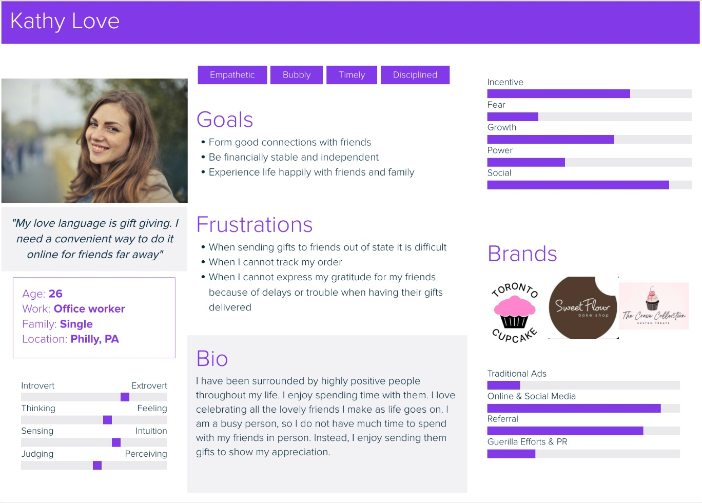

Website Redesign: Toronto Cupcake
UX DESIGN CASE STUDY
By identifying key user pain points, I redesigned the website to create a smoother, more intuitive navigation experience. I also updated the visual design to better express the playful and inviting theme of cupcakes.
My role:
This was a solo project where I conducted user research, explore ideas through ideation, designed prototypes, and built interactions.
Target Audience:
I have based the user persona off of reviews that customers wrote about Toronto Cupcake. Most people seem to get these cupcakes for other people and not themselves. Because of this, I envision most people care about their friends. The reviews showed that the customers are happy when the recipient of the cupcakes enjoy them. So, I created a persona of someone that has a love language of gift giving. It also seemed like customers would order from outside of Toronto for someone in Toronto, so Kathy (the persona created), lives in Philly. Overall, the vibes of the customers seem to be happy, caring and celebratory, so Kathy is someone that enjoys celebrating life with her friends and family. This makes her an ideal visitor of the website because she would want to find cupcakes to send as gifts to her loved ones when celebrating or appreciating them.
Research
Conducted card sorting with potential users to better understand their preferences for Toronto Cupcake's website page organization and navigation.

explanation of card sort one